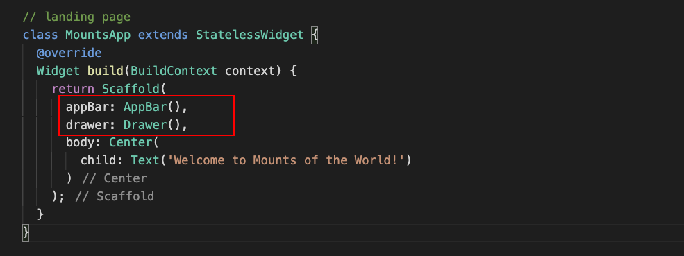
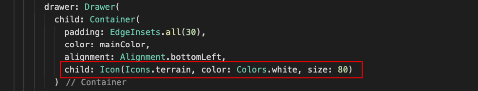
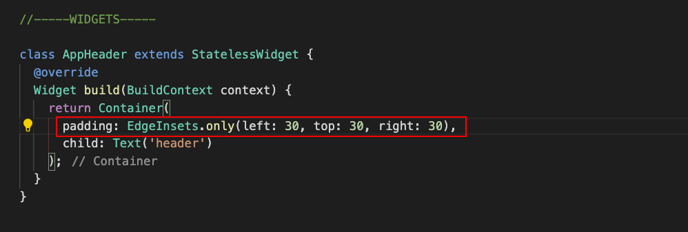
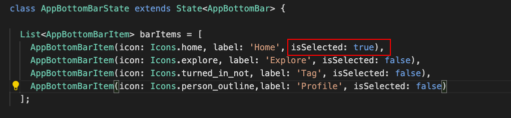
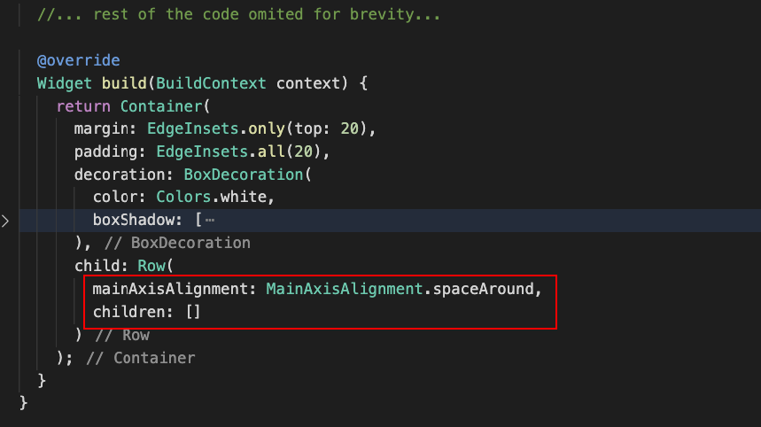

What You'll Build in this Codelab:
- Create the Landing Page
- Create the individual widgets that make up this page widget
- Dive into building UI layouts in Flutter using just core widgets
The following illustration shows a schematic view of the widget composition we'll accomplish while building the layout for our landing page widget:
We'll further break down each of the widgets depicted above for further breakdown and composition.
Since we'll be developing this page further, we want our application to skip the splash screen while we work on it. Therefore, you should temporarily point your main application widget to this page.
In the main method, comment out the SplashPage value assigned to the home property of the MaterialApp and add the MountsApp instead, as shown below:
Let's start working on the landing page we started in the previous codelab called MountsApp and do some refactoring - we'll start from the top and work our way down.
In the existing build method, we are returning a Scaffold widget, which is ideal as the foundation of our visual layout structure, so we'll keep it.
Inside of the Scaffold, let's populate both the appBar and drawer property by assigning to them an AppBar widget and a Drawer widget respectively. An AppBar widget - just like the name implies - is the application's topmost bar, where we can place a title, navigation icons, menu icons, etc. The Drawer widget is a panel that slides out horizontally from the edge of a Scaffold widget, used for menus, navigation links, etc.
Your code should look as follows:

Change the Scaffold's background color
Add an additional property to the Scaffold widget, called backgroundColor and set it to Colors.white. This will change its background color to white and serve as the background color to all other widgets we'll place inside of it.
It looks pretty bare now, and we want to differentiate our app from others, so we'll further customize each one of this components, starting from the AppBar widget. Let's proceed!
In this step we'll customize the AppBar widget to match our design. We'll make the one from the left look like the one on the right, where we remove the shadow, make it transparent, the menu icon adopts our app's color palette as well as showing an icon as title.
Customizing the AppBar
Let's proceed by setting the following properties of the AppBar widget:
- Set the elevation property to 0 - this removes the shadow from the AppBar
- Set its backgroundColor property to Colors.transparent to remove the default blue
- Set its iconTheme property to IconThemeData(color: mainColor) to set it to our mainColor property already defined above.
Your code should look like this afterwards:
Here's the code you need to add inside the AppBar widget, just to help you out:
// add inside the AppBar widget, inside the parenthesis:
elevation: 0,
backgroundColor: Colors.transparent,
iconTheme: IconThemeData(color: mainColor)
Adding Title Icons and Placeholder Items
Let's work on adding an icon as title.
Proceed to set the AppBar's title property by adding an Icon widget, wrapped inside a Center widget so it gets centered at the top, as such:
For the title to truly look centered, make use of an additional property of the AppBar widget called actions, which is used for adding additional options on the right side of the AppBar.
We'll add an empty [SizedBox[(https://api.flutter.dev/flutter/widgets/SizedBox-class.html) widget, 40px width and height, and add it to the actions array property of the AppBar. This will add empty box to compensate for the added space by the hamburger menu on the left:
If you hit Run on DartPad to test the app so far, you should see the AppBar already customized. It shows the logo, the hamburger menu with our theme color, and the title logo looks centered thanks to the trick of adding an empty space on the right via the actions property of the AppBar widget:
Let's proceed to customizing the Drawer widget a bit.
We'll customize the Drawer widget a little bit. A Drawer is pretty much like any other single-child widget, in which you can add anything inside it and it will render as you please.
The bottom illustration is what will look like once we customize the Drawer widget and its behavior:
The following illustration is a quick schematic of what we'll be accomplishing for the Drawer widget:
It will have a solid color background with the app's logo at the bottom left corner.
Customizing the Drawer
First, let's start by adding a Container widget as the child of the Drawer widget, and set its padding to 30px all around using EdgeInsets.all(30). Set its background color to mainColor and align its contents to the bottom left corner by setting its alignment property to Alignment.bottomLeft:
Now, add an Icon widget as the child of the newly added Container widget, with our specific icon (Icons.terrain), color of white and size 80. Your code should look like this:

And with that, you should be all set with customizing the Drawer widget. You can feel free to add further elements and links to your own Drawer widgets, since it provides a lot of flexibility for customization. Let's keep moving!
We'll proceed now with the contents of the page, starting with the header, which we're calling AppHeader. This will display a simple header with an avatar image and a few text labels.
The following is a quick schematic view of what we'll be accomplishing as far as the widgets that make up the AppHeader widget itself:
Set up the Foundation for Scaffold Body Widgets
Before we start, we must set up what the layout strategy will be for all widgets inside the body of the Scaffold. Since the items are laid out vertically from top to bottom, we'll use a Column widget.
Replace the current contents of the Scaffold's body property (the Center widget) by a Column widget, and set its crossAlignment property to CrossAlignment.start, so its children align themselves to the left, vertically, from top to bottom:
Add the AppHeader placeholder widget
Let's add the AppHeader widget as a placeholder, and as the body's Column widget's first child, by setting its children property to an array containing the AppHeader widget's placeholder, as follows:
Create the AppHeader widget class
Under the MountsApp class, add a comment for the widgets section:
class MountsApp extends StatelessWidget { ... }
//-----WIDGETS-----
Under this comment, create the class corresponding to the AppHeader widget. Add the following elements as you create the initial scaffolding for it:
- Create it as a StatelessWidget
- Override its build method as usual
- In its build method, return a Container widget
- For testing purposes, add a Text widget as a child of the Container widget. Add the text header.
Here's the foundation code so you can save some typing:
// app header widget
class AppHeader extends StatelessWidget {
@override
Widget build(BuildContext context) {
return Container(
child: Text('header')
);
}
}
If you hit Run on DartPad now, you should be able to see the text "header" showing right in the slot where the header is supposed to show, as in the screenshot below:
Let's continue building the structure for this widget.
In the existing AppHeader's Container widget, add padding to it, but only left, top and right. The way to do it is using the EdgeInsets' option only, as in EdgeInsets.only(left: 30, top: 30, right: 30), as in the code below:

Replace the existing Container's child (the Text widget) by a Row widget. This widget will lay down its children in a row, horizontally, from left to right:
Add the first child to this Row, an avatar image clipped as a circle. We'll use a ClipOval widget - very suitable for these cases - which in turn will wrap an Image widget that we'll fetch from the network, with fixed dimensions (50px X 50px) with a fit of BoxFit.cover so it fills up the dimensions of the image, maintaining its aspect ratio.
Next, add a Column widget, which will lay down the two Text widgets one on top of each other as a unit, next to the Image.
Add a Text widget for the name, and another for a short greeting. Add style to both Text widgets as needed using the TextStyle object, passing color, font size, font weight, etc.
Here's the code you need to add for both Text widgets:
// add these Text widgets inside the **children** property of the Column widget:
Text('Hello, Roman',
style: TextStyle(color: Colors.black, fontWeight: FontWeight.bold)
),
Text('Good morning',
style: TextStyle(color: mainColor, fontSize: 12)
)
If you run it as is, you'll see that the spacing might be a bit tight between the image and the text labels:
Add some spacing between the ClipOval and the Column by adding a SizedBox widget, with a width of 20px:
With the spacing in place, this is what it looks like:
We got our header down! Congrats on making it this far! We'll proceed next to build the layout of a search bar widget. Let's proceed!
Let's work on the layout for the search bar of this app, which we're calling AppSearch.
The following illustration shows a schematic view of what we'll be accomplishing on this widget, broken down by widget:
Let's start!
Creating the AppSearch class and adding the placeholder
Start by adding a placeholder object inside the Column that's the body of the landing page's Scaffold widget, right underneath the AppHeader widget. Just like before, do not worry about the error that shows - it just doesn't exist. We'll create it now. We do this so we don't forget it later.
Now, right underneath the AppHeader widget's class, add a new class. Name it AppSearch. Make it extend StatelessWidget like previously when we created the AppHeader widget. Also, like before, override its build method and add a placeholder Container widget, with a Text widget as a child, with the content "search":
Below is the foundation code you can copy / paste, to save you some keystrokes:
// app search widget
class AppSearch extends StatelessWidget {
@override
Widget build(BuildContext context) {
return Container(
child: Text('search')
);
}
}

Let's continue.
Just like in the AppHeader, we want to add some padding to the root container of this widget, so let's do just that. Add padding of 30px all around the Container widget, as follows:

Replace the existing contents of the root Container widget in the AppSearch widget by a Column widget, with its *crossAxisAlignment property set to CrossAxisAlignment.start:
Add the first child of this Column, a Text widget with the content "Discover", with a font size of 25px and a font weight of 900:
We want some spacing between this label and the rest of the content, so we'll introduce it by adding a SizedBox with a height of 20px, right below the Text widget:

The third child in this Column widget will be a Row widget - we need it so we can lay down our widgets in a row fashion, with the first item in the Row (the search box) occupying most of its space, as in the illustration below:
Let's build just that.
Setting up the search box row
Right underneath the SizedBox we just added, add a Row widget; add the children property but make it empty for now:
This row will have two children: a search box container on the left, occupying most of the space, and a custom button on the right. If we want the search box container to occupy most of the space, we wrap it inside an Expanded widget, which tells its parent Row widget that the widget inside it will occupy most of its space; the rest of the widgets will only get the space allocated to them based on their dimensions.
Let's work on it.
Add an Expanded widget as the first child of this Row, wrapping a Container widget:
Give this container the following properties:
- A fixed height of 50px
- Padding all around, 10px
- Add a BoxDecoration decoration to allow us to set its color, as well as a border radius
- Set the decoration color of Colors.grey[200]
- Set the border radius to BorderRadius.circular(10)
Inside of the container, now we will add the search icon, a label that says "Search", and a bit of space in between them. In order to match our design, we will need another Row widget to lay them out horizontally inside this Container:
Add an Icon widget, with the Icons.search icon, color grey. The spacing will be taken care of by a SizedBox widget, width 10px. And last, a Text widget with the content "Search", with color grey as well:
To wrap up this search bar layout, we will add the button located at the right hand side of the search box. We will build it using a Container widget wrapping an Icon widget.
Inside the Row widget, underneath the Expanded widget holding the search box, let's add a Container widget with the following specs:
- Fixed width and height of 50px
- Left margin of 10px using EdgeInsets.only(left: 10)
- BoxDecoration with color mainColor; border radius set to BorderRadius.circular(10)
- Icon widget as a child, with icon set to Icons.tune, with a color of white.
To save you some typing, copy / paste the code below, representing that button:
// add this right underneath the expanded widget
//...
Container(
margin: EdgeInsets.only(left: 10),
width: 50,
height: 50,
decoration: BoxDecoration(
color: mainColor,
borderRadius: BorderRadius.circular(10)
),
child: Icon(Icons.tune, color: Colors.white)
)
//...
With that in place, let's take it for a spin. Clicking Run on DartPad should yield the following result:
We nailed the search bar layout! Kudos to you for making it this far! We'll move onto a bit more advanced components and layouts in the next step. When you're ready, hit Next.
The next widget is one of the most prominent widgets on this app, as it displays multiple items in a list-view fashion, allowing the users to interact with and view several items at once. We're calling this widget AppMountListView as it displays the information of famous mounts in the world - the topic of this app.
The following illustration depicts the schematic view of the widget composition of the AppMountListView widget:
Adding Models that feed data to the AppMountListView
Before we start, you might be wondering where to get the images and the information about the famous mounts of the world. For that, we'll have to mock it up, and the data to be in a structured way. We'll create Dart models that will hold this mocked data.
Creating A MountModel class
We need to hold the data corresponding to a single mount. For this, we will create a simple class called MountModel, which will hold the following information:
- A path property, type String, to hold the URL path to the picture of the mount
- A name property, type String, which will hold the name of the mount
- A description property, type String, which will hold the description of the mount
- A location property, also type String, which will have the name of the location of the mount.
Write a class called MountModel at the end of this file, adding the properties above. Add a constructor for it and initialize the properties with some default empty values. At the end, your class should look like this:
//----MODELS----
class MountModel {
String path;
String name;
String location;
String description;
MountModel({
this.path = '',
this.name = '',
this.location = '',
this.description = ''
});
}
Creating Mocked Data from the Created Model
Now that we have a way to structure the data we want to show (by creating a model class that will hold the values), we'll mock some data and store it in a collection so we can later feed it to our ListView widget.
Create a list of MountModel items, called mountItems; make it final so we can assign default values right from the start. Populate it with the following values (you can add your own data, but for the sake of this workshop, you can grab the values provided below). Add this collection at the top of the file, in the GLOBAL VARIABLES SECTION (if you created a section for them), otherwise just add them at the top of the main method:
final List<MountModel> mountItems = [
MountModel(
path:
'https://sa.kapamilya.com/absnews/abscbnnews/media/2021/afp/01/17/20210116-mt-semeru-indonesia-ash-afp-s.jpg',
name: 'Mount Semeru',
description:
'Semeru, or Mount Semeru, is an active volcano in East Java, Indonesia. It is located in the subduction zone, where the Indo-Australia plate subducts under the Eurasia plate. It is the highest mountain on the island of Java.',
location: 'East Java'),
MountModel(
path:
'https://media-cdn.tripadvisor.com/media/photo-s/04/a5/6f/ce/dsc-5622jpg.jpg',
name: 'Mount Merbaru',
description:
'Mount Merbabu is a dormant stratovolcano in Central Java province on the Indonesian island of Java. The name Merbabu could be loosely translated as Mountain of Ash from the Javanese combined words; Meru means mountain and awu or abu means ash.',
location: 'Central Java'),
MountModel(
path: 'https://cdn.dlmag.com/wp-content/uploads/2019/07/maunaloa1.jpg',
name: 'Mauna Loa',
description:
'Mauna Loa is one of five volcanoes that form the Island of Hawaii in the U.S. state of Hawai in the Pacific Ocean. The largest subaerial volcano in both mass and volume, Mauna Loa has historically been considered the largest volcano on Earth, dwarfed only by Tamu Massif.',
location: 'Hawaii'),
MountModel(
path:
'https://cdn.images.express.co.uk/img/dynamic/78/590x/mount-vesuvius-1100807.jpg',
name: 'Mount Vesuvius',
description:
'Mount Vesuvius is a somma-stratovolcano located on the Gulf of Naples in Campania, Italy, about 9 km east of Naples and a short distance from the shore. It is one of several volcanoes which form the Campanian volcanic arc.',
location: 'Italy'),
MountModel(
path:
'https://upload.wikimedia.org/wikipedia/commons/0/04/PopoAmeca2zoom.jpg',
name: 'Mount Popocatépetl',
description:
'Popocatépetl is an active stratovolcano located in the states of Puebla, Morelos, and Mexico in central Mexico. It lies in the eastern half of the Trans-Mexican volcanic belt. At 5,426 m it is the second highest peak in Mexico, after Citlaltépetl at 5,636 m.',
location: 'Mexico')
];
Creating the AppMountListView widget class / Adding Placeholder
As in the previous occasions, we first add a placeholder widget instance, then we create it. We'll do the same here.
Back in the MountsApp widget, inside the Column inject, right underneath the AppSearch widget we created earlier, add an Expanded widget, which wraps our upcoming widget called AppMountListView.

Now, go to the WIDGETS section (if you created one, otherwise let's work right under the AppSearch widget we created earlier) and add a new class called AppMountListView that extends StatelessWidget. As in the past, override the build method, add some dummy Container with a Text widget, just for testing. Add the text "Mount List" to the Text widget.
Your class should look as follows:
Here's the foundation / boilerplate code to save you some time:
// app mount list view widget
class AppMountListView extends StatelessWidget {
@override
Widget build(BuildContext context) {
return Container(
child: Text('Mount List')
);
}
}
If you hit the Run button on DartPad at this point in time, it should yield the following output in the preview panel on the right, which proves that things are hooked up and the widget is showing:
Let's proceed.
Creating the AppMountListView widget layout
Let's start by modifying the existing Container widget.
Add a fixed height of 150px; we want to constrain the height of the ListView items that get rendered, so we'll limit the height at the ListView's parent level.
Now, let's replace the existing child of the Container widget (the Text widget) by a ListView widget, which provides a scrollable list of widgets arranged linearly.
There are many ways in which you can instantiate a ListView widget, but we'll use a convenient constructore called builder, which creates a scrollable, linear array of widgets that are created on demand.
Our ListView.builder constructor takes several parameters, but we'll only use three of them:
- scrollDirection: set the direction in which we want users to scroll through items. Default is vertical, but we want horizontal scrolling, hence setting its value to Axis.horizontal.
- itemCount: the number of items that the ListView will render for us. Notice we're using the length of the mountItems collection we created previously.
- itemBuilder: callback that gets triggered for as many items you set in itemCount (one for every item in the mountItems collection); returns widgets created on demand as they become visible, for efficiency.
Save some typing and add this block of code as the child of the Container widget:
// add this as the child of the Container widget (see illustration)
child: ListView.builder(
scrollDirection: Axis.horizontal,
itemCount: mountItems.length,
itemBuilder: (context, index) {
return Container();
}
)
Now, for as many items that are visible in the ListView widget's viewport, it invokes the itemBuilder callback, passing the context and the index corresponding to the ListView item in question. We'll use those parameters to build each widget based on the data provided in the mountItems collection.
Let's give this Container more definition.
First, fetch the data from the mountItems collection corresponding to the index provided in the *itemBuilder callback, as follows:
We'll use this currentMount local variable to hold on to the current mount model information in the current iteration.
For the Container, let's start setting up some properties:
- Set its alignment property to Alignment.bottomLeft so child widgets align themselves accordingly
- Set both padding and margin (all around) to 20px and 10px respectively
- Fixed dimensions of width and height, 150px each
We'll set the image as a background image to this Container widget. To accomplish this, we set the image property (type DecorationImage) of the container's decoration property. We'll use a NetworkImage widget, passing the path of the image in the current iteration (available via the currentMount local variable) and using its path property.
While we're at it, we'll set a border radius to BorderRadius.circular(15) to give some soft round edges all around it:
If you run the code as-is, by hitting Run on DartPad, this would be the outcome:
The images show, and they stretch all the way down the height of the page, due to the Expanded widget wrapping the ListView and taking up most of the Column widget space.
Let's proceed now and add content to this container.
Add a Column widget as the child of the Container being returned. Add mainAxisAlignment set to MainAxisAlignment.end, as well as crossAxisAlignment set to CrossAxisAlignment.start, so the items get aligned at the bottom of the column and at the left, respectively:
As children of the newly added Column widget, add two Text widgets. and tap into the data provided in the currentMount property to display the name and the location. For both name and location, set their color to Colors.white, but for name only, set its *fontWeight property to FontWeight.bold to make it more prominent:

Save yourself some time and paste the following structure as the children of the above Column widget:
// add this inside the Column widget
//...
children: [
Text(currentMount.name,
style: TextStyle(
color: Colors.white,
fontWeight: FontWeight.bold
)
),
Text(currentMount.location,
style: TextStyle(
color: Colors.white
)
)
]
//...
If you run the app as it stands right now, you should see that the labels display at the bottom of the container, on top of the image, as shown below:
And that's about it! Our AppMountListView widget is in place and fully functioning, with the help of mocked data powering this widget. Give yourself a pat on the back for accomplishing that!
Now, we're ready for the next widget in line, so hit the Next button to proceed.
The next widget in line is the AppCategoryList widget, which displays a list of categories, much in the same way as the mount pictures - using a horizontally scrollable ListView widget.
App Category List
The following is a schematic view of what we'll be building as far as this widget goes:
Adding Models that feed data to the AppCategoryList
We're gonna follow exactly the same approach as in the AppMountListView - we'll mock up the data for the categories, and create Dart models that will hold this mocked data.
Creating A CategoryModel class
We need to hold the data corresponding to a single category. For this, we will create a simple class called CategoryModel, which will hold the following information:
- A category property, type String, to hold the category name
- An icon property, type IconData (we'll make it nullable), which will hold the icon of the corresponding category. We set it nullable by default so we don't have to be forced to assign a default value and can be null initially. More on Flutter null-safety here.
Write a class called CategoryModel at the end of this file, adding the properties above. Add a constructor for it and initialize the properties with some default empty values.
At the end, your class should look like this:
class CategoryModel {
String category;
IconData? icon;
CategoryModel({this.category = '', this.icon});
}
Creating Mocked Data from the Category Model
Now that we have a way to structure the data we want to show (by creating a model class that will hold the values), we'll mock some data and store it in a collection so we can later feed it to our ListView widget inside the AppCategoryList widget.
Create a list of CategoryModel items, called categories; make it final so we can assign default values right from the start. Populate it with the following values (you can add your own data, but for the sake of this workshop, you can grab the values provided below).
Add this collection at the top of the file, in the GLOBAL VARIABLES SECTION (if you created a section for them), otherwise just add them at the top of the main method:
final List<CategoryModel> categories = [
CategoryModel(category: 'Mountain', icon: Icons.terrain),
CategoryModel(category: 'Forest', icon: Icons.park),
CategoryModel(category: 'Beach', icon: Icons.beach_access),
CategoryModel(category: 'Hiking', icon: Icons.directions_walk)
];
Creating the AppCategoryList widget class / Adding Placeholder
As in the previous occasions, we first add a placeholder widget instance, then we create it. We'll do the same here.
Back in the MountsApp widget, inside the Column inject, right underneath the Expanded widget that wraps the AppMountListView widget we created earlier, add our upcoming widget AppCategoryList.
Now, go to the WIDGETS section (if you created one, otherwise let's work right under the AppMountListView widget we created earlier) and add a new class called AppCategoryList that extends StatelessWidget. As in the past, override the build method, add some dummy Container with a Text widget, just for testing. Add the text "Categories" to the Text widget.
Your class should look as follows:
Copy / paste the foundation code for this widget to speed things up:
// app categorylist widget
class AppCategoryList extends StatelessWidget {
@override
Widget build(BuildContext context) {
return Container(
child: Text('Categories')
);
}
}
If you hit the Run button on DartPad at this point in time, it should yield the following output in the preview panel on the right (see the text "Categories" at the bottom), which proves that things are hooked up and the widget is showing:
Let's proceed.
Creating the AppCategoryList widget layout
Let's start by modifying the existing Container widget. This widget will follow pretty much the same layout as the AppMountListView.
We'll start by replacing the contents of the existing Container widget (the Text widget) by a Column widget; while you're at it, add two Container widgets as its children:
Creating the AppCategoryList header row
Now, let's focus on the top row for now. This is a zoomed-in view of the top container's schematic view. This is what we'll build:
Just like in the illustration above, for the top Container widget, add some padding (20px all around) using EdgeInsets.all(20) as well as adding a Row widget as its child:
We want to place two Text widgets inside, spreaded apart.
For this, set the *mainAxisAlignment of the Row widget to MainAxisAlignment.spaceBetween.
Add two Text widgets; first one with the text "Categories", color black and bold. The second one, font size 12px, use the mainColor for the text color, and bold as well:
Grab the code below and replace the empty Row widget we just created:
// inside the Container widget, replace the existing row
// with the following code:
Row(
mainAxisAlignment: MainAxisAlignment.spaceBetween,
children: [
Text('Category',
style: TextStyle(color: Colors.black, fontWeight: FontWeight.bold)
),
Text('See More',
style: TextStyle(color: mainColor,fontSize: 12, fontWeight: FontWeight.bold
)
),
]
)
If you run it now on DartPad by hitting Run, you should see the category header showing:
And with that, we're done with the header row. Let's do the row that holds the ListView displaying the categories.
Creating the Categories ListView row
Now we'll focus on the bottom row, by starting to look at the schematic view for it:
With that, let's proceed building the structure.
For the second Container widget representing the second row, add a fixed height of 100px, plus margin of 10px but only on the left side:
As the child of this Container widget, add a ListView widget, and we'll use the same builder constructor out of the ListView to generate items for it on demand, based on how many categories we have available. We'll build the list providing values to its parameters as follows:
- For scrollDirection, set it to Axis.horizontal to enable horizontal scrolling
- For the itemCount, set it to the categories.length value
- For the itemBuilder callback (which will get triggered for each of the categories that are visible in the viewport), we'll add it and return a placeholder Container widget, which we'll flesh out in a minute.
Your code should look as follows:
If you want to save some time, grab the ListView.builder below, and paste it as the child of the second Container widget:
// add this as the child of the second Container widget:
child: ListView.builder(
scrollDirection: Axis.horizontal,
itemCount: categories.length,
itemBuilder: (context, index) {
return Container();
}
)
Now let's build up on the returning Container widget from the itemBuilder callback.
Inside the itemBuilder method of the ListView.builder constructor, we currently have an empty Container widget. We will populate this container with the data we get out of the categories collection corresponding to the index passed to this callback.
Create a local variable called currentCategory right above this Container, which will correspond to the category of the current iteration:
Great. Now let's build up on the Container being return by hydrating some of its properties as follows:
- Fixed width of 100px
- Margins only top and right, 10px
- Padding all around of 10px
- BoxDecoration decoration, so we can add a border all around, with a width of 2px, light grey
- Border radius of 10px all around the container
Let me help you out a bit; grab the code below; replace the whole returning Container widget:
// replace the returning container by this block of code:
return Container(
width: 100,
margin: EdgeInsets.only(top: 10, right: 10),
padding: EdgeInsets.all(10),
decoration: BoxDecoration(
border: Border.all(color: Colors.grey.withOpacity(0.2), width: 2),
borderRadius: BorderRadius.circular(10)
)
);
Your code should look like this:
As the child of this Container, let's add a Column widget (since we want to align the items vertically), plus set its mainAxisAlignment property to MainAxisAlignment.center so they are vertically centered:
This Column widget will hold two items: an Icon widget and a Text widget, which will be fed from the currentCategory local variable we set up earlier.
Let's add these two elements as children of the Column; get the icon from the currentCategory.icon property and set its color to mainColor; get the category name from the currentCaregory.category, set its font size to 12px and its font weight to bold, as follows:
As a recap, for every item in the categories collection, the itemBuilder callback of the ListView will trigger, render a Container widget with the values provided, and display them to the user in a horizontally scrollable list.
Let's hit Run in DartPad to see what we've accomplished so far, and this is what we get:

Looking good! Loved how it came out, and how the application is taking shape. Now we'll proceed with the last widget for this page: the bottom bar widget. Click Next to proceed to the next step. See you there!
We're ready to tackle the layout of the last widget of the MountsApp page widget, which we're calling the AppBottomBar, which is nothing more than a custom bar that can be used as tab navigation for this page, and switch between different views based on what the user has clicked. We will only do the layout and not perform any navigation, for the sake of this tutorial that deals with layout building.
App Bottom Bar Widget
For this widget, we'll be maintaining state within itself, hence this widget will inherit from StatefulWidget. Every time a user clicks on one of the bottom bar options, the widget's state changes - the state of which one is selected - which triggers a rebuild, and renders accordingly. That's in essence how StatefulWidgets work. More on StatefulWidgets here.
Let's show the schematic view of this widget, so we'll have a concrete idea of its composition and how we'll build it:
Creating the AppBottomBar widget class / Adding Placeholder
As in the previous occasions, we first add a placeholder widget instance, then we create it. We'll do the same here.
Back in the MountsApp widget, inside the Column inject, right underneath the AppCategoryList widget we created earlier, add our upcoming widget AppBottomBar.
Now, go to the WIDGETS section (if you created one, otherwise let's work right under the AppCategoryList widget we created earlier). Creating a StatefulWidget involves a two-step process.
A widget that maintains its state and extending StatefulWidget is composed of two classes, the widget class that extends StatefulWidget and the State class.
First step is creating a new class that extends StatefulWidget (in our case, a class called AppBottomBar).
In this class, you will override a special method called createState, which instantiates the companion State class, which by convention, it's usually named <NAME_OF_WIDGET>State (i.e. AppBottomBarState - we haven't created it yet, but we will in a minute):
Second step is creating the class that will hold the state for this widget, which we'll call AppBottomBarState - this is the one that contains the build method, and every time the state changes, the build method gets triggered, rebuilding the widget, keeping it in sync with the data. This class extends State and must be of type of its corresponding StatefulWidget (i.e. State<AppBottomBar>) so as to establish the relationship between the widget and its state.
As in the past, override the build method, add some dummy Container with a Text widget, just for testing. Add the text "Bottom Bar" to the Text widget.
Right off the bat, the State class looks pretty much like a StatefulWidget class, with an overridden build method - we'll see down below what makes it so special.
Your class(es) should look as follows:
To save you time, copy / paste the foundation code provided for you below:
// app bottom bar
class AppBottomBar extends StatefulWidget {
@override
AppBottomBarState createState() => AppBottomBarState();
}
// app bottom bar state
class AppBottomBarState extends State {
@override
Widget build(BuildContext context) {
return Container(
child: Text('Bottom Bar')
);
}
}
If you hit the Run button on DartPad at this point in time, it should yield the following output in the preview panel on the right (see the text "Bottom Bar" at the bottom), which proves that things are hooked up and the widget is showing:
Let's dig in!
Creating a Model for the Bottom Bar Item Data
Before we proceed further, we want to create a model that holds the data corresponding to each one of the bottom bar items (i.e. we want to show an icon, a label, a flag whether it is selected or not, etc.). This model will also hold information about the state we're keeping track of - which of the selected bottom bar items is selected.
Let's create a model class called AppBottomBarItem, which will be just a regular class that will hold the following properties:
- icon: type IconData, represents the icon to show for each item in the bottom bar
- isSelected: type bool, holds the value of whether this is the currently selected item in the bottom bar
- label: type String, holds the label to display when the item is selected
Your AppBottomBarItem model class should look as follows:
class AppBottomBarItem {
IconData? icon;
bool isSelected;
String label;
AppBottomBarItem({
this.icon,
this.label = '',
this.isSelected = false
});
}
Now that we have a way to represent each of the bottom bar items, let's create a collection of these items inside of the State so we can keep track of which one is selected.
Proceed to the AppBottomBarState class; inside of the class, above the build method, create a property called barItems; make it a List of AppBottomBarItem models, and initialize it with an empty array, as follows:
Now let's populate it with some mocked data:
// populate the list of AppBottomBarItems
List<AppBottomBarItem> barItems = [
AppBottomBarItem(icon: Icons.home, label: 'Home', isSelected: true),
AppBottomBarItem(icon: Icons.explore, label: 'Explore', isSelected: false),
AppBottomBarItem(icon: Icons.turned_in_not, label: 'Tag', isSelected: false),
AppBottomBarItem(icon: Icons.person_outline,label: 'Profile', isSelected: false)
];
Notice that the top item inserted has the isSelected property as true since we want the first item to display as selected by default:

Nice. Let's build up on that existing Container widget returned by the build method.
Let's set some of its properties to the following values:
- margin: 20px only on the top
- padding: 20px all around
- decoration: use a BoxDecoration object and set the following properties:
- color: set it to white
- boxShadow: add an array with a single BoxShadow element; set its color to black with a 0.1 opacity, blurRadius of 10, and set its *offset to Offset.zero.
To help you with the coding, grab the code below, and paste it inside the Container widget, on top of the child:
// return Container
margin: EdgeInsets.only(top: 20),
padding: EdgeInsets.all(20),
decoration: BoxDecoration(
color: Colors.white,
boxShadow: [
BoxShadow(
color: Colors.black.withOpacity(0.1),
blurRadius: 10,
offset: Offset.zero
)
]
),
// child: Text('Bottom Bar')
Replace the contents of the Container widget (the Text widget) by a Row widget (the items in the bottom bar will be laid out horizontally, evenly spaced out).
Add a Row widget, and set its mainAxisAlignment property to MainAxisAlignment.spaceAround - this will make its children space themselves accordingly, with equal amount of space distributed among them.

We'll generate the children of the Row widget as a list, based on the values available in the collection called barItems created earlier. We'll loop through these items and generate a corresponding widget from each of the items available.
The factory method available in the List class called generate will simplify the looping throught the items in the barItems collection. This factory method takes two parameters: the length of the list (provided by barItems.length) and a callback, which will be executed for each of the items in the collection, and will pass an index into the callback - the index corresponding to each item in the collection:
Now, for each of the items in the barItems collection, we will build a structure according to whether they are selected or not. If they are selected, we'll build a widget structure to denote they are selected, and a separate one otherwise. This widget tree logic will be driven by the isSelected flag.
Let's see the schematic view before we tackle it:
Now let's tackle the first portion of the widget structure: when a bar item is selected.
First, grab the current bar item from the iteration (using the index supplied to the callback method) and grab the corresponding item from the barItems collection using this index:
We'll also create a local variable called barItemWidget to hold the resulting widget to render based on that logic:
Creating the structure for when isSelected == true
As stated before, if the currentBarItem.isSelected is true, we'll create a specific structure, and store it on our barItemWidget variable. The first structure will consist of a Container widget with the following properties set as follows:
- padding: 15px left, 5px top, 15 px right
- decoration: using a BoxDecoration object with the color set to mainColor and a border radius of 20px all around, to give it that pill look:
Here's the code for the if statement above:
if (currentBarItem.isSelected) {
barItemWidget = Container(
padding: EdgeInsets.only(left: 15, top: 5, bottom: 5, right: 15),
decoration: BoxDecoration(
borderRadius: BorderRadius.circular(20),
color: mainColor
),
);
}
The child of this container will be an icon and a label, separated by some space, so we'll resort to a Row widget to lay these out, so add a Row widget as a child of this Container.
Add an Icon widget, and using the currentBarItem property to fetch the icon property out of it, setting it to a white color. Add space next to it by using a SizedBox of 5px width, and then a Text widget, feeding into it the currentBarItem.label to show the name, with a color of white as well.
Your Container's child (the Row widget) should look like this afterwards:
We're all set with the structure for when the item is selected. Now let's do for the normal / non-selected visual state.
Create the structure for when isSelected == false
We'll add the missing else clause that should handle the case when the isSelected is false, in which all we want to add is a simple IconButton widget, with its icon property set to the icon supplied in the currentBarItem.icon, with color grey, and a callback hooked up to its onPressed event:
Triggering the widget to rebuild by calling setState
When a user taps on one of the bar items not selected, it will change its flag to isSelected == true; this is an indication that this widget's state has changed and that we want the widget visualization to sync with the data. The way to trigger a widget rebuild is by wrapping this action inside a method supplied by the State class called setState. By performing the desired change (flipping the value from false to true in the corresponding model) will trigger a set of events:
- The value in the model changes from true to false
- The widget gets notified that its user interface is not in sync with the data via the setState method
- A widget rebuild kicks off, re-rendering its structure using the newly updated data
- The widget displays the updated user interface in sync with the data
Inside the onPressed() event, call the setState() method, and inside of this method, loop through all barItems items, only marking as selected the one that matches with the currentBarItem - the one in the current iteration:
Here's the code that goes inside the onPressed event, if you want to save some typing:
// paste inside the onPressed event of the IconButton widget,
// which triggers a rebuild on the AppBottomBar widget
setState(() {
barItems.forEach((AppBottomBarItem item) {
item.isSelected = item == currentBarItem;
});
});
Every time we press on one of the non-selected items, setState gets called, flag is reset for one of the items, widget rebuilds, and so on.
Finally, return the resulting widget (barItemWidget) at the end of this callback method, and you should be all set.
If you take it for a spin on DartPad and hit Run, you'll notice the newly minted AppBottomBar widget. Click on the items on the bar and you'll see them change state accordingly, and the state contained only within this widget in a very efficient manner:
And with that, we're done with the second codelab of this workshop, where we accomplished the following:
- Created the Landing Page
- Created the individual widgets that make up this page widget
- Created models and mocked data that fed these widgets
- Dive into building UI layouts in Flutter using just core widgets
- Delved into StatefulWidgets and how they changed state and trigger widget rebuilds
In the next and final codelab, we'll flesh out the details page widget and continue building more widgets, diving more into layouts, navigation and passing data between widgets. See you there!
Please don't forget to follow me on social media:
- On Twitter (@drcoderz)
- On YouTube (Roman Just Codes)
- On My Personal Portfolio
- On Medium
In case you fell behind on this codelab, below is the whole code for this codelab in a way you can copy / paste directly into DartPad:
import 'package:flutter/material.dart';
//-----GLOBAL VARIABLES-----
final Color mainColor = Color(0xFFFF5656);
final List<MountModel> mountItems = [
MountModel(
path:
'https://sa.kapamilya.com/absnews/abscbnnews/media/2021/afp/01/17/20210116-mt-semeru-indonesia-ash-afp-s.jpg',
name: 'Mount Semeru',
description:
'Semeru, or Mount Semeru, is an active volcano in East Java, Indonesia. It is located in the subduction zone, where the Indo-Australia plate subducts under the Eurasia plate. It is the highest mountain on the island of Java.',
location: 'East Java'),
MountModel(
path:
'https://media-cdn.tripadvisor.com/media/photo-s/04/a5/6f/ce/dsc-5622jpg.jpg',
name: 'Mount Merbaru',
description:
'Mount Merbabu is a dormant stratovolcano in Central Java province on the Indonesian island of Java. The name Merbabu could be loosely translated as Mountain of Ash from the Javanese combined words; Meru means mountain and awu or abu means ash.',
location: 'Central Java'),
MountModel(
path: 'https://cdn.dlmag.com/wp-content/uploads/2019/07/maunaloa1.jpg',
name: 'Mauna Loa',
description:
'Mauna Loa is one of five volcanoes that form the Island of Hawaii in the U.S. state of Hawai in the Pacific Ocean. The largest subaerial volcano in both mass and volume, Mauna Loa has historically been considered the largest volcano on Earth, dwarfed only by Tamu Massif.',
location: 'Hawaii'),
MountModel(
path:
'https://cdn.images.express.co.uk/img/dynamic/78/590x/mount-vesuvius-1100807.jpg',
name: 'Mount Vesuvius',
description:
'Mount Vesuvius is a somma-stratovolcano located on the Gulf of Naples in Campania, Italy, about 9 km east of Naples and a short distance from the shore. It is one of several volcanoes which form the Campanian volcanic arc.',
location: 'Italy'),
MountModel(
path:
'https://upload.wikimedia.org/wikipedia/commons/0/04/PopoAmeca2zoom.jpg',
name: 'Mount Popocatépetl',
description:
'Popocatépetl is an active stratovolcano located in the states of Puebla, Morelos, and Mexico in central Mexico. It lies in the eastern half of the Trans-Mexican volcanic belt. At 5,426 m it is the second highest peak in Mexico, after Citlaltépetl at 5,636 m.',
location: 'Mexico')
];
final List<CategoryModel> categories = [
CategoryModel(category: 'Mountain', icon: Icons.terrain),
CategoryModel(category: 'Forest', icon: Icons.park),
CategoryModel(category: 'Beach', icon: Icons.beach_access),
CategoryModel(category: 'Hiking', icon: Icons.directions_walk)
];
//-----MAIN METHOD-----
void main() {
runApp(
MaterialApp(
debugShowCheckedModeBanner: false,
home: MountsApp() // SplashPage()
)
);
}
//-----PAGES-----
// splash page
class SplashPage extends StatelessWidget {
@override
Widget build(BuildContext context) {
Future.delayed(const Duration(seconds: 2), () {
Navigator.of(context)
.push(MaterialPageRoute(builder: (context) => MountsApp()));
});
return Container(
color: mainColor,
child: Stack(
children: [
Align(
alignment: Alignment.center,
child: Icon(Icons.terrain, color: Colors.white, size: 90),
),
Align(
alignment: Alignment.bottomCenter,
child: Container(
margin: EdgeInsets.only(bottom: 80),
child: CircularProgressIndicator(
valueColor: AlwaysStoppedAnimation<Color>(Colors.white)
)
)
)
],
)
);
}
}
// landing page
class MountsApp extends StatelessWidget {
@override
Widget build(BuildContext context) {
return Scaffold(
backgroundColor: Colors.white,
appBar: AppBar(
elevation: 0,
backgroundColor: Colors.transparent,
title: Center(
child: Icon(
Icons.terrain,
color: mainColor,
size: 40
)
),
actions: [
SizedBox(width: 40, height: 40)
],
iconTheme: IconThemeData(color: mainColor)
),
drawer: Drawer(
child: Container(
padding: EdgeInsets.all(30),
color: mainColor,
alignment: Alignment.bottomLeft,
child: Icon(Icons.terrain, color: Colors.white, size: 80)
)
),
body: Column(
crossAxisAlignment: CrossAxisAlignment.start,
children: [
AppHeader(),
AppSearch(),
Expanded(
child: AppMountListView()
),
AppCategoryList(),
AppBottomBar()
],
)
);
}
}
//-----WIDGETS-----
class AppHeader extends StatelessWidget {
@override
Widget build(BuildContext context) {
return Container(
padding: EdgeInsets.only(left: 30, top: 30, right: 30),
child: Row(
children: [
ClipOval(
child: Image.network(
'https://avatars.githubusercontent.com/u/5081804?v=4',
width: 50,
height: 50,
fit: BoxFit.cover
),
),
SizedBox(width: 20),
Column(
crossAxisAlignment: CrossAxisAlignment.start,
children: [
Text('Hello, Roman',
style: TextStyle(
color: Colors.black,
fontWeight: FontWeight.bold
)
),
Text('Good Morning',
style: TextStyle(
color: mainColor,
fontSize: 12
)
)
]
)
],
)
);
}
}
class AppSearch extends StatelessWidget {
@override
Widget build(BuildContext context) {
return Container(
padding: EdgeInsets.all(30),
child: Column(
crossAxisAlignment: CrossAxisAlignment.start,
children: [
Text('Discover',
style: TextStyle(
fontWeight: FontWeight.w900,
fontSize: 25
)
),
SizedBox(height: 20),
// rest of the code omitted for brevity
Row(
children: [
Expanded(
child: Container(
height: 50,
padding: EdgeInsets.all(10),
decoration: BoxDecoration(
color: Colors.grey[200],
borderRadius: BorderRadius.circular(10)
),
child: Row(children: [
Icon(Icons.search, color: Colors.grey),
SizedBox(width: 10),
Text('Search', style: TextStyle(color: Colors.grey))
]
)
),
),
Container(
margin: EdgeInsets.only(left: 10),
width: 50,
height: 50,
decoration: BoxDecoration(
color: mainColor,
borderRadius: BorderRadius.circular(10),
),
child: Icon(Icons.tune, color: Colors.white)
)
],
)
],
)
);
}
}
class AppMountListView extends StatelessWidget {
@override
Widget build(BuildContext context) {
return Container(
height: 150,
child: ListView.builder(
scrollDirection: Axis.horizontal,
itemCount: mountItems.length,
itemBuilder: (context, index) {
// rest of the code omitted for brevity...
MountModel currentMount = mountItems[index];
return Container(
alignment: Alignment.bottomLeft,
padding: EdgeInsets.all(20),
margin: EdgeInsets.all(10),
width: 150,
decoration: BoxDecoration(
borderRadius: BorderRadius.circular(15),
image: DecorationImage(
image: NetworkImage(currentMount.path),
fit: BoxFit.cover
)
),
child: Column(
mainAxisAlignment: MainAxisAlignment.end,
crossAxisAlignment: CrossAxisAlignment.start,
children: [
Text(currentMount.name,
style: TextStyle(
color: Colors.white,
fontWeight: FontWeight.bold
)
),
Text(currentMount.location,
style: TextStyle(
color: Colors.white
)
)
]
)
);
}
)
);
}
}
class AppCategoryList extends StatelessWidget {
@override
Widget build(BuildContext context) {
return Container(
child: Column(
children: [
Container(
padding: EdgeInsets.all(20),
child: Row(
mainAxisAlignment: MainAxisAlignment.spaceBetween,
children: [
Text('Category',
style: TextStyle(color: Colors.black, fontWeight: FontWeight.bold)
),
Text('See More',
style: TextStyle(color: mainColor,fontSize: 12, fontWeight: FontWeight.bold
)
),
]
)
),
Container(
height: 100,
margin: EdgeInsets.only(left: 10),
child: ListView.builder(
scrollDirection: Axis.horizontal,
itemCount: categories.length,
// rest of the code omitted for brevity...
itemBuilder: (context, index) {
CategoryModel currentCategory = categories[index];
return Container(
width: 100,
margin: EdgeInsets.only(top: 10, right: 10),
padding: EdgeInsets.all(10),
decoration: BoxDecoration(
border: Border.all(color: Colors.grey.withOpacity(0.2), width: 2),
borderRadius: BorderRadius.circular(10)
),
child: Column(
mainAxisAlignment: MainAxisAlignment.center,
children: [
Icon(currentCategory.icon, color: mainColor),
Text(currentCategory.category,
style: TextStyle(fontSize: 12, fontWeight: FontWeight.bold))
]
)
);
}
)
),
],
)
);
}
}
class AppBottomBar extends StatefulWidget {
@override
AppBottomBarState createState() => AppBottomBarState();
}
class AppBottomBarState extends State<AppBottomBar> {
List<AppBottomBarItem> barItems = [
AppBottomBarItem(icon: Icons.home, label: 'Home', isSelected: true),
AppBottomBarItem(icon: Icons.explore, label: 'Explore', isSelected: false),
AppBottomBarItem(icon: Icons.turned_in_not, label: 'Tag', isSelected: false),
AppBottomBarItem(icon: Icons.person_outline,label: 'Profile', isSelected: false)
];
//... rest of the code omited for brevity...
@override
Widget build(BuildContext context) {
return Container(
margin: EdgeInsets.only(top: 20),
padding: EdgeInsets.all(20),
decoration: BoxDecoration(
color: Colors.white,
boxShadow: [
BoxShadow(
color: Colors.black.withOpacity(0.1),
blurRadius: 10,
offset: Offset.zero
)
]
),
child: Row(
mainAxisAlignment: MainAxisAlignment.spaceAround,
children:
List.generate(barItems.length, (index) {
AppBottomBarItem currentBarItem = barItems[index];
Widget barItemWidget;
if (currentBarItem.isSelected) {
barItemWidget = Container(
padding: EdgeInsets.only(left: 15, top: 5, bottom: 5, right: 15),
decoration: BoxDecoration(
borderRadius: BorderRadius.circular(20),
color: mainColor
),
child: Row(
children: [
Icon(currentBarItem.icon, color: Colors.white),
SizedBox(width: 5),
Text(currentBarItem.label, style: TextStyle(color: Colors.white))
]
)
);
}
else {
barItemWidget = IconButton(
icon: Icon(currentBarItem.icon, color: Colors.grey),
onPressed: () {
setState(() {
barItems.forEach((AppBottomBarItem item) {
item.isSelected = item == currentBarItem;
});
});
}
);
}
return barItemWidget;
}
)
)
);
}
}
//----MODELS----
class MountModel {
String path;
String name;
String location;
String description;
MountModel({
this.path = '',
this.name = '',
this.location = '',
this.description = ''
});
}
class CategoryModel {
String category;
IconData? icon;
CategoryModel({this.category = '', this.icon});
}
class AppBottomBarItem {
IconData? icon;
bool isSelected;
String label;
AppBottomBarItem({
this.icon,
this.label = '',
this.isSelected = false
});
}